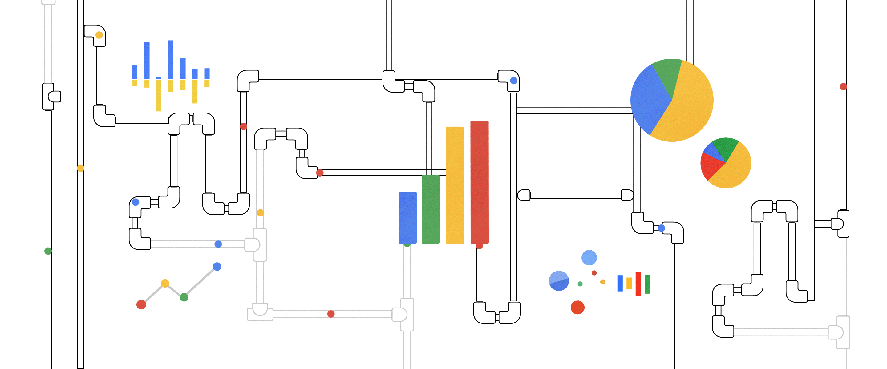

TUTORIAL DE ENVIO DAS PLANILHAS DE MEDIÇÃO
Bem-vindo ao tutorial de envio de planilhas para medições de ordens de serviço de manutenção predial.
Este guia será um passo a passo que ajudará você a organizar e enviar medições, garantindo que os dados sejam enviados
de forma padronizada e permitam a atualização mensal do dashboard de Análise de Medições.

1º PASSO:
Preencha a planilha de medições das Ordens de Serviço utilizando exatamente os nomes das colunas da planilha modelo abaixo:
É possível acessar o modelo para fazer a sua cópia clicando aqui.
2º PASSO:
Preencha a coluna "CLASSIFICAÇÃO" da seguinte forma:
Existem três opções possíves:
M.O.F - Para descrever Mão de Obra Fixa, ou seja, engloba os custos relacionados aos serviços permanentes.
Incluindo a remuneração fixa dos funcionários envolvidos diretamente na execução dos serviços ou na produção de bens.
A Mão de Obra Fixa é constante, independentemente do volume de trabalho, sendo uma parte integrante da força de trabalho dos custos operacionais.
Serviço Especial - Aqui estão contemplados os custos associados a serviços específicos e não recorrentes, que fogem à rotina operacional.
Isso pode incluir pinturas, serviços técnicos especializados, manutenção de equipamentos complexos ou qualquer atividade que não seja parte regular das operações.
A categoria de Serviço Especial é para refletir despesas pontuais e diferenciadas.
Outros - A categoria "Outros" abrange despesas que não se enquadram diretamente nas classificações anteriores.
Esses podem incluir custos diversos e variados, pequenas compras de materiais, ou gastos que não se encaixam nas categorias principais.
3º PASSO:
Preencha a coluna "CATEGORIA" da seguinte forma:
Existem oito opções possíves:
Obra Correção - Esta categoria refere-se a intervenções ou trabalhos realizados para corrigir defeitos, falhas ou problemas identificados em uma estrutura existente.
Inclui atividades destinadas a reparar danos ou imperfeições, garantindo a correção e a durabilidade das instalações.
Obra Melhoria - Engloba projetos e execuções destinados a aprimorar ou aperfeiçoar as condições e características de uma estrutura ou espaço.
Inclui investimentos para elevar a qualidade, funcionalidade ou eficiência de determinada área ou instalação.
Simples Fornecimento - Refere-se à simples entrega de materiais ou produtos, sem a execução direta de serviços.
Esta categoria engloba transações comerciais em que o foco principal é o fornecimento de itens específicos, sem envolvimento significativo de mão de obra adicional.
Equipe - Diz respeito aos custos associados à contratação e manutenção de uma equipe de trabalho.
Isso inclui salários, benefícios e encargos sociais relacionados aos trabalhadores envolvidos diretamente na execução de atividades.
Laudo/Projeto - Esta categoria abrange os custos relacionados à elaboração de laudos técnicos, estudos ou projetos específicos.
Inclui despesas associadas à análise, planejamento e desenvolvimento de documentos técnicos necessários para a condução adequada de determinado trabalho.
Manta Elastomérica - Engloba os custos relacionados ao fornecimento e aplicação de mantas elastoméricas.
Este material é utilizado em isolamento térmico e acústico, servindo para garantir eficiência energética e conforto ambiental.
Pintura - Refere-se aos custos associados à aplicação de tintas e revestimentos em superfícies diversas.
Inclui materiais e mão de obra necessários para realizar trabalhos de pintura, seja por questões estéticas, de proteção ou ambas.
Outros - Esta categoria é reservada para despesas que não se encaixam nas classificações anteriores.
Inclui gastos diversos e não especificados nas demais categorias, proporcionando flexibilidade para acomodar diferentes tipos de custos não previstos.
Na imagem a seguir, temos a exibição dos filtros disponíveis para a utilização:
Filtro de processo: Sem processo, Com processo, Minhas reservas;
Filtro do tipo de item: Produto ou Serviço;
Filtro de tipo de Negociação: Spot (Ordem de Compra) ou Catálogo (Contrato);
Filtro de Status: Todos os Status, Pagamento Não Solicitado,
Pagamento Não Autorizado,
Aguardando Liberação Solicitante,
Pagamento Solicitado Em Aprovação,
Em Revisão,
Pagamento Solicitado,
Aguardando Pagamento,
Pagamento Pendente,
Pagamento Realizado;
Ao lado do botão Buscar há um quadro em que você pode digitar o número do processo, nome do fornecedor, unidade, CNPJ entre outras informações do processo e procurar por elas.
OBS: os processos advindos de Contrato são mostrados destacados em verde.
Terceiro passo: Nos casos em que não esteja aparecendo a opção de "Montar Processo", é preciso puxar a responsabilidade para o seu usuário.
Para isso, basta clicar no ícone na coluna "Reservar", conforme vídeo abaixo.
Você verá que o nome do responsável passará a ser o seu e que o ícone "Montar processo" se tornará disponível.
Os processos da tela mostrada no vídeo são sempre apresentados em ordem de Status, conforme imagem abaixo.
1° Processos em Revisão: estarão listados primeiro pois são saqueles que o finaneiro ou o aprovador podem ter pedido alguma correção.
2° Aguardando a Liberação do Solicitante: são aqueles iniciados pelo próprio solicitante, mas ainda não finalizados por ele.
3° Processos em Aprovação: status em que o processo está esperando a aprovação do aprovador e em seguida irá para o financeiro.
4° Pagamento Não Solicitado: processos que estão prontos para serem montados, mas que ainda não foi feita nenhuma ação para dar prosseguimento.
5° Pagamento solicitado: Passou pelo workflow de aprovação, chegou no financeiro, porém ainda não foi aceito. A partir desse status, todos são referentes a como o processo está no financeiro e seus nomes são descrições do que significam.
6° Pagamento pendente: quando o processo não foi pago ou não se anexou o comprovante de pagamento até a data de vencimento.
7° Liberado para pagamento: quando o processo foi aceito pelo financeiro, mas está aguardando o pagamento.
8° Pagamento Realizado: status final em que o pagamento foi realizado e anexado o comprovante.
Quarto passo: Agora que o quadro Montar Processo de Pagamento se abriu, estarão disponíveis toda as informações do processo.
Esse momento é bastante semelhante a como era feito no e-Doc, colocando Observações, Data de Pagamento e etc.
Uma das vantagens do sistema e-Compras é a possibilidade de interação para os fornecedores. Com essa plataforma, os fornecedores têm a possibilidade de acompanhar o status dos pagamentos de seus serviços ou produtos. Além disso, oferece a oportunidade para que eles próprios atualizem suas documentações. Peçam para que fiquem atentos, sendo assim, essa medida beneficia tanto a AGIR quanto os fornecedores, trazendo uma relação mais transparente e ágil entre ambas as partes.
Abaixo é mostrada a sequência, de "Em Análise" para "Aceito", em que o solicitante dará aceite em sua documentação. Portanto, o processo poderá seguir adiante quando estiver marcado como "Aceito".
1° 2° 3°
Será, por conseguinte, de sua responsabilidade inserir os documentos obrigatórios faltantes e conferir se as certidões estão dentro do prazo de validade.
Caso alguma não esteja, inseri-la novamente.
Após concluir a inserção de documentos e demais informações obrigatórias, será possível clicar no botão "Enviar para Aprovação" no canto direito do quadro.
Como as informações que vejo são importadas para o e-Compras?
Primeiramente, é preciso lembrar que não houve alteração no fluxo do processo de pagamento em si. A mudança está relacionada à forma como o processo é encaminhado para o setor financeiro para a devida ação de pagamento.
Em outras palavras, as mesmas pessoas que costumavam autorizar os pagamentos pelo e-Doc, agora continuam a fazê-lo através do e-Compras.
As entradas das notas continuam sendo feitas pelo MV e serão importadas automaticamente para o e-Compras.
Assim como certidões que também serão importadas automaticamente.
No entanto, há de se destacar que, por hora, o processo é importado e já aparece pronto para dar prosseguimento; porém, num futuro próximo, primeiramente haverá um parâmetro em que será necessário fazer a avaliação do fornecedor no e-Compras.
Quando essa função paramétrica aparecer, haverá uma nova explicação específica de como fazê-la.
Formulário para requisição de perfil de acesso ao e-Compras
Ainda não tem acesso ao e-Compras ou ao módulo de pagamentos? Preencha o Formulário abaixo.
Vídeo resumo - Módulo de Pagamento
Para dúvidas e quaisquer esclarecimentos, seguem os contatos: Maicon (maicon.reis@agirsaude.org.br), Pedro (pedro.borges@agirsaude.org.br), Yarley (yarley.silva@agirsaude.org.br)